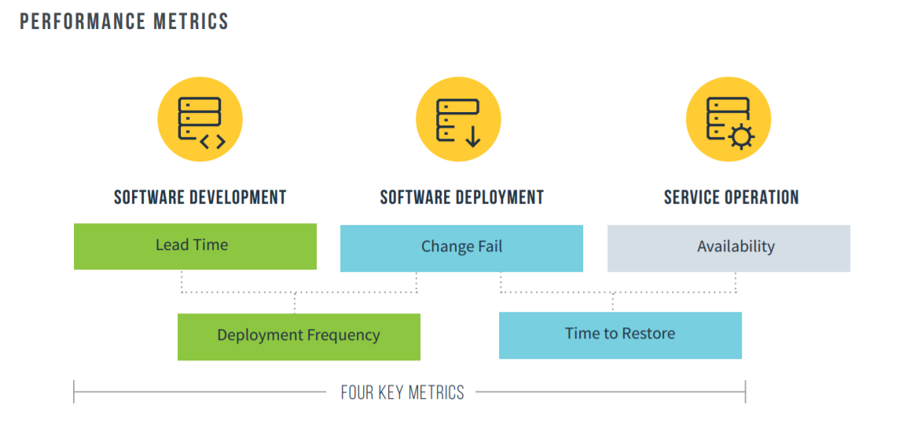
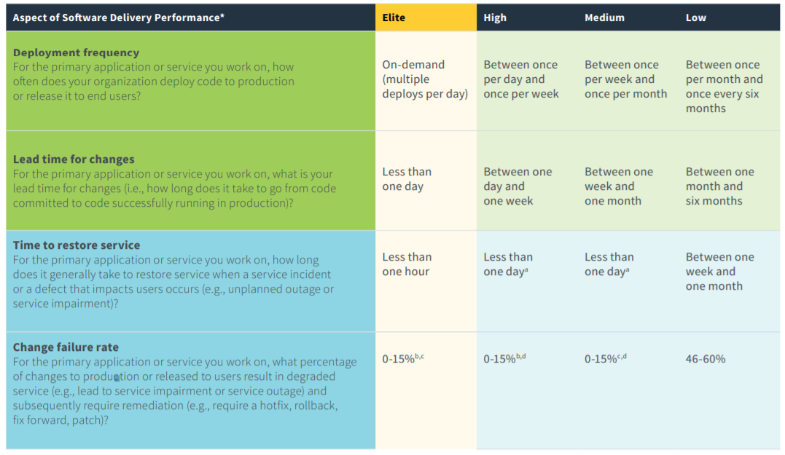
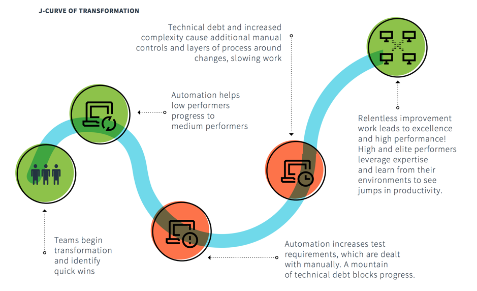
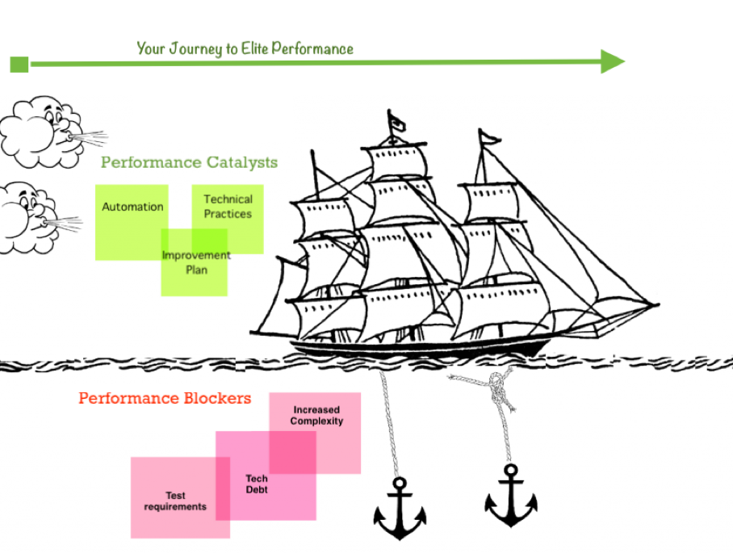
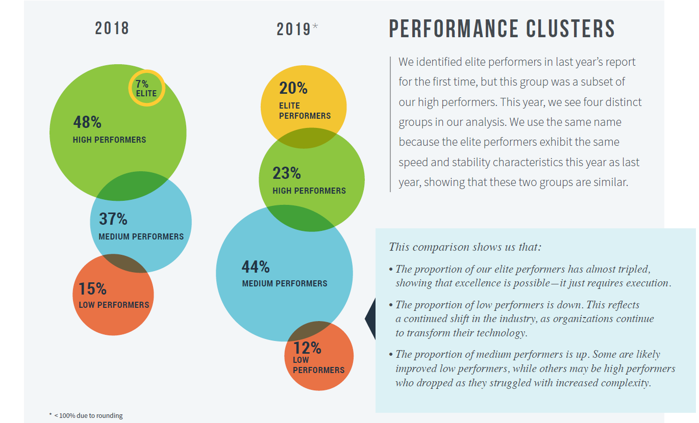

DevOps 的出色表现
DevOps 不断发展，自从2009年提出此术语以来，DevOps 的状态每年都呈指数级增长。在2019年飞速发展的过程中，各种规模和形态的组织（从企业到初创公司）在 DevOps 方面都展现了极大的热情。每个组织都有其自己的 DevOps故事，其中一些故事尚未开始，一些故事还处于婴儿期，有些故事已经成熟，有些故事已经达到顶峰。 不同于其他故事，DevOps 故事源于不断改进。
随着企业逐渐变得数字化和软件驱动，人们对 DevOps 旅程的本质和可能性有了更大的认识。不仅工程师或技术领导者，甚至商业领导者都对 DevOps 的概念、实践和应用非常感兴趣。对于实现商业成功的 DevOps 的需求已得到越来越广泛的接受。
《 2019 年 DevOps 状态报告》作为大量在线资源的提供者之一，可用于解和学习 DevOps 如何塑造跨行业的软件交付。该报告极大地总结了软件交付的趋势和挑战，它可以帮助团队研究可用于提升软件交付能力并最终成就卓越。
在此报告中，IT 性能称为软件交付能力，以区分软件交付工作与 IT 服务台和其他支撑功能。这是一个期待已久的可喜变化。我也喜欢的关键更改之一是增加了运营指标以完成软件交付周期。该报告重点介绍了五个被称为“软件交付和运营（SDO）性能指标”的度量或指标，它们侧重于系统级结果。这有助于避免软件度量标准的常见陷阱，后者常常使不同的功能相互冲突，并导致以牺牲总结果为代价的局部优化。

该报告重点介绍了软件交付能力的四个方面，如下所示：
- 部署频率 – 对于您从事的主应用程序或服务，您的组织多久部署一次代码？
- 变更的前置时间 – 对于您从事的主应用程序或服务，您的变更前置时间是多少（即，从代码提交到成功在生产中运行的代码需要多长时间）？
- 恢复服务的时间 – 对于您正在使用的主应用程序或服务，发生服务事件（例如计划外中断或服务受损）时，恢复服务通常需要多长时间？
- 变更失败率 – 对于您使用的主应用程序或服务，导致服务质量下降或随后需要修复（例如，导致服务受损、服务中断，需要修改程序、回滚、向前修复、修补程序）的变更的百分比？
然后对这四个方面进行度量，以对四个类别的性能进行排名：精英、高级、中级和低级。下表（从报告中引用）指示了各个方面的详细信息。

我强烈建议添加到此列表中的另一个方面是“团队敬业度指数”，即团队的快乐程度和参与度。我认为团队绩效与团队敬业度成正比。团队敬业度越高，即团队越快乐越敬业，他们产生的结果就越好。
报告中的另一个主题是“ J 转换曲线”。下图突出显示了自动化如何帮助绩效低下的人员提升到中等性能水平，然后测试需求、技术负担和复杂性增加导致手动操作，从而导致进度变慢。这是一个有趣且值得注意的观察。它强调了自动化并不总是答案。如果您使错误的流程自动化，那么您得到的只是错误的结果，而且更快。

无休止的改进、学习、共享和利用专业知识可将您带到高水平或精英绩效水平 – 将团队提升为精英绩效的旅程需要的不仅仅是工具。在各个级别（即团队级别、领导级别和赞助者级别）的坚持、恒心和毅力对于从低绩效水平或中绩效水平取得突破以发挥团队最大潜力至关重要。如果我们踏上精英绩效之旅，您会发现自动化、技术实践和持续改进计划是您旅途的催化剂。鉴于测试需求、技术债务和日益增加的复杂性将成为您的阻碍，我发现锚定和引擎（帆船回顾展）格式提供了一种快速而有趣的方法，可在一幅图片中（如下所示）可视化催化剂（引擎）和阻滞剂（锚定）。

行业看到了更高的精英绩效
该报告证实，精英表演者的比例几乎增加了两倍，低表现者的比例下降了，中等表演者的比例上升了。要注意的一项主要观察结果是，从低性能到中性能再到高性能的移动不是单向的。当面对复杂性增加时，团队（从 J 曲线中突出显示）可以从高位降为中级，也可以从中级降为低级。总体而言，很高兴看到向上增加。

前进之路
软件交付性能可以通过多种方式确定业务成果。 组织推动软件交付绩效的能力包括文化，技术实践，清晰的变更流程，持续交付和基于价值的成果。 这些功能并不是一蹴而就的，需要对组织 DNA 进行根本性的改变。
根据我在不同行业和公司中工作的经验，我可以确认这些软件交付能力集群不是静态的。上面列出的任何功能的更改都会对软件交付能力产生影响，您可能会发现能力集群在两个方向上都从一个级别波动到另一个级别。关键是要保持专注并通过定期将其嵌入组织的工作方式中来维持它。